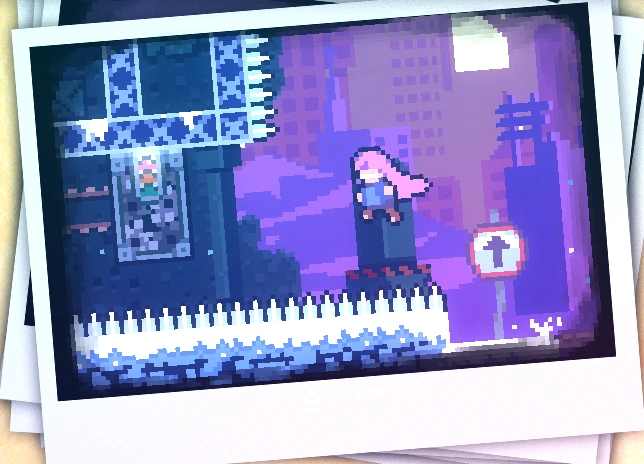
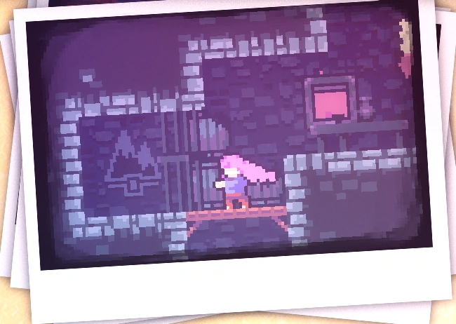
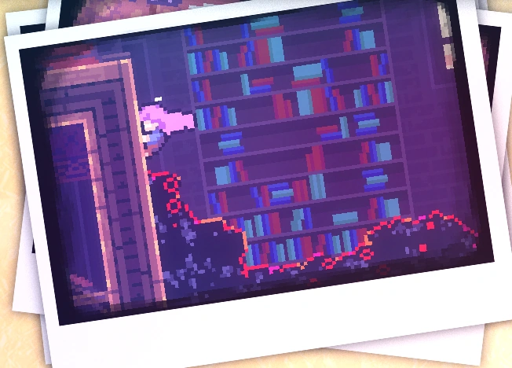
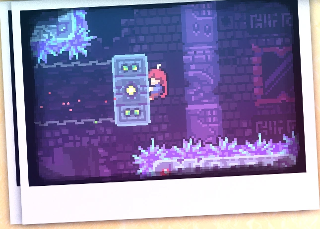
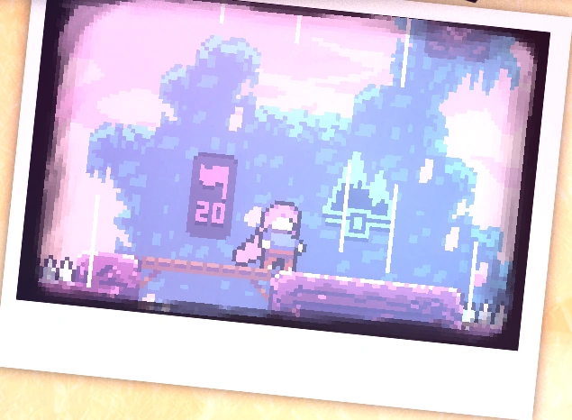

Capítulo 7: O Cume
O Cume é o sétimo capítulo de Celeste e o último do jogo base.
Após a conclusão do capítulo, o epílogo é desbloqueado
Mecânicas
Plot
Após sua queda na caverna, Madeline e Badeline começam a subir a montanha mais uma vez. Eles passam por versões em miniatura de cada capítulo anterior, encontrando muitos dos mesmos obstáculos encontrados nesses níveis. No entanto, a porção final é diferente de cada subcapítulo anterior.
Diálogos
Coletáveis
Coração de cristal:
Para obter o coração de cristal no Capítulo 7, é necessário encontrar seis joias escondidas em cada subcapítulo - uma estrela azul para "Reflexão no Início", um quadrado de safira para "Cidade Abandonada" em 500 metros, um oval de esmeralda para "Antigo Sítio" em 1000 metros, um círculo de ouro para "Resort Celestial" em 1500 metros, um diamante rosa para "Crista Dourada" em 2000 metros e uma pérola branca para "Templo do Espelho" em 2500 metros. Você obtém o coração de cristal em 3000 metros depois de pegar todas as joias.

Fita cassete:
A fita cassete do capítulo 7 é adquirida no quarto subcapítulo em uma sala secreta.

Morangos:
• Morango dourado:
Conseguido após concluir a fase enquanto segura o morango dourado. Só pode ser coseguido após concluir o lado B do capítulo 8.
• Morango vermelho:
Morango 1: Morango vermelho:
Morango 2: Morango vermelho:
Morango 3: Morango vermelo com asas:
Morango 4: Morango vermelho:
Morango 5: Morango vermelho:
Morango 6: Morango vermelho:
Morango 7: Morango vermelho:
Morango 8: Morango vermelo com asas:
Morango 9: Morango vermelho:
Morango 10: Morango vermelho:
Morango 11: Morango vermelho:
Morango 12: Morango vermelho:
Morango 13: Morango vermelo com asas:
Morango 14: Morango vermelho:
Morango 15: Morango vermelho:
Morango 16: Morango vermelho:
Morango 17: Morango vermelho:
Morango 18: Morango vermelo com asas:
Morango 19: Morango vermelho:
Morango 20: Morango vermelho:
Morango 21: Morango vermelho:
Morango 22: Morango vermelho:
Morango 23: Morango vermelo com asas:
Morango 24: Morango vermelho:
Morango 25: Morango vermelho:
Morango 26: Morango vermelho:
Morango 27: Morango vermelho:
Morango 28: Morango vermelo com asas:
Morango 29: Morango vermelho:
Morango 30: Morango vermelho:
Morango 31: Morango vermelho:
Morango 32: Morango vermelho:
Morango 33: Morango vermelo com asas:
Morango 34: Morango vermelho:
Morango 35: Morango vermelho:
Morango 36: Morango vermelho:
Morango 37: Morango vermelho:
Morango 38: Morango vermelo com asas:
Morango 39: Morango vermelho:
Morango 40: Morango vermelho:
Morango 41: Morango vermelho:
Morango 42: Morango vermelho:
Morango 43: Morango vermelo com asas:
Morango 44: Morango vermelho:
Morango 45: Morango vermelho:
Morango 46: Morango vermelho:
Morango 47: Morango vermelho:
Subcapítulos
O Cume possui 7 subcapítulos:
Início

500 m
1000
1500 m
2000 m

2500 m
3000 m
